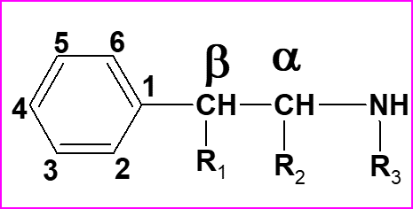
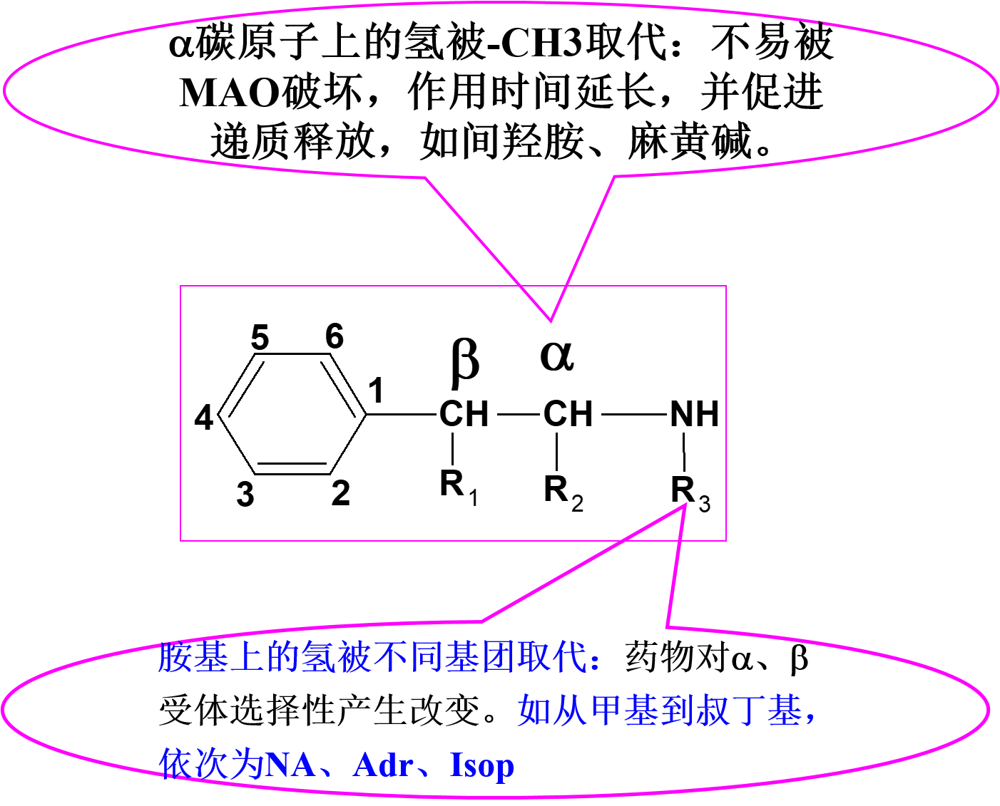
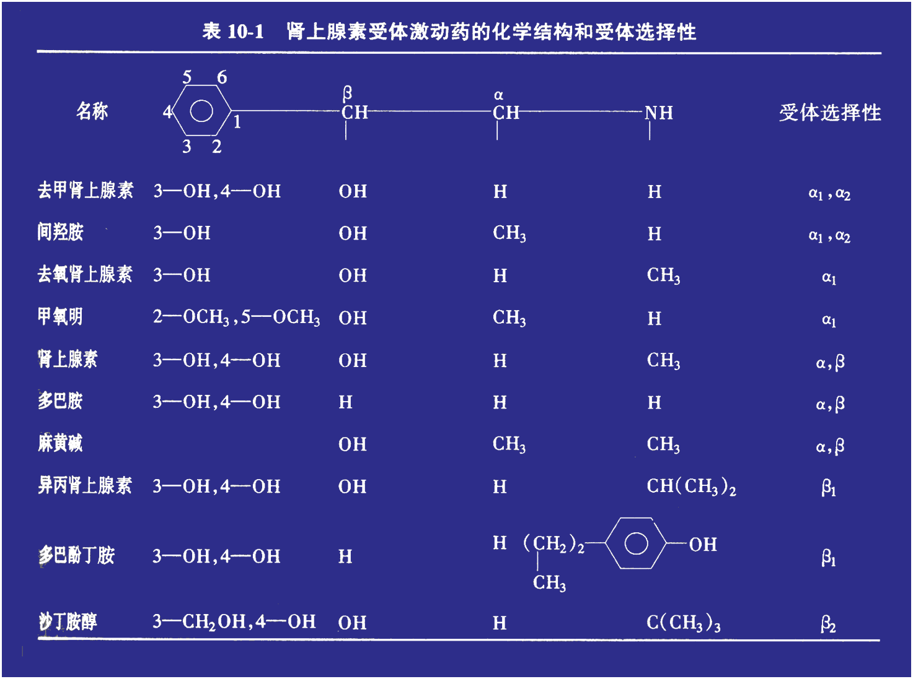
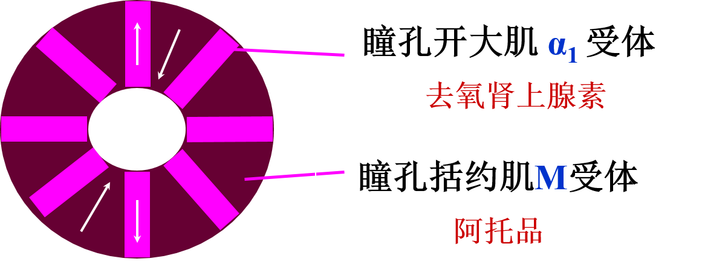
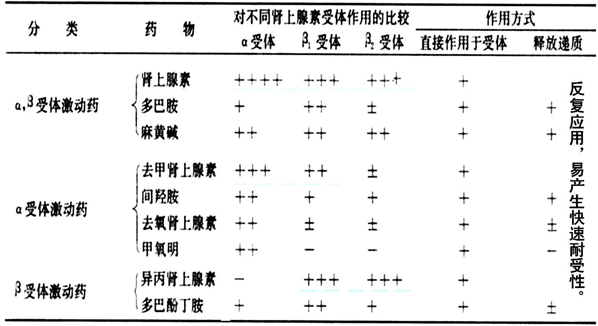
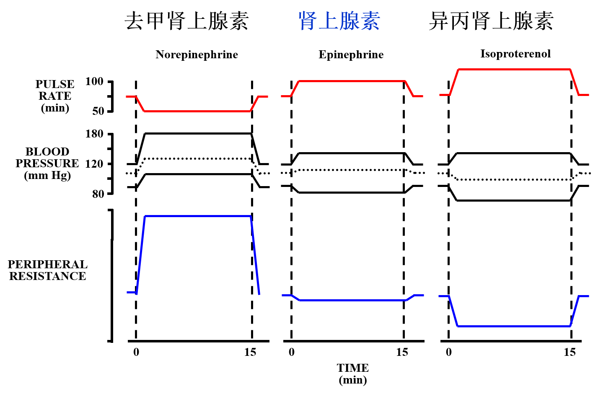
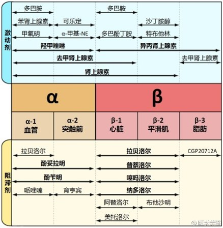

肾上腺素受体激动药和阻断药¶
1. 受体回顾¶
肾上腺素受体功能
\alpha_{1}：血管平滑肌（动静脉）＋非血管平滑肌（兴奋）↑
【皮肤粘膜(强烈)－肾脏(显著)－脑肝肠系膜等－骨骼肌血管;冠脉】
\alpha_{2}：突触前膜（为主）调节（负反馈）↓
突触后膜（较少，一般分析较少谈及）作用复杂不清↑
\beta_{1}：心脏（心肌＋窦房结等）＋肾素（RAAS→BP体液调节）↑
\beta_{2}：仅在骨骼肌血管和冠脉平滑肌＋非血管平滑肌（呼消泌子）↓
2. 药物基本属性¶
是一类化学结构和药理作用与AD、NA相似，可与肾上腺素受体结合，激动受体，产生肾上腺素样作用的药物。
为胺类，作用和交感神经兴奋相似，又称为拟交感胺类
拟肾上腺素药
2.1 基本化学结构¶
\beta-苯乙胺

苯环上化学基团的不同：
儿茶酚胺类：AD、NA、ISOP、DA【外周作用明显、时间短、中枢作用弱】
非儿茶酚胺类：间羟胺、麻黄碱、甲氧明、新福林【外周作用减弱,作用时间延长，口服可增加F，中枢作用增加】

1 | Isop：异丙肾上腺素（isoprenaline） |
各药物化学结构如下：

2.2 药物分类¶
\alpha受体激动药
NA、间羟胺、去氧肾上腺素、可乐定
\alpha、\beta受体激动药
AD、麻黄碱、多巴胺
\beta受体激动药
ISOP、多巴酚丁胺（\beta_{1}）、沙丁胺醇（\beta_{2}） 、特布他林（\beta_{2}）
3. α受体激动药¶
3.1 α1与α2受体激动药¶
去甲肾上腺素（Noradrenaline, NA; Norepinephrine NE ）¶
来源：
1 2 | 由肾上腺素能神经末梢、肾上腺髓质释放 人工合成品（常用重酒石酸盐），不稳定，遇光或碱氧化变成粉红色 |
分布：
1 | 心、肾上腺髓质、血管 |
代谢：
1 2 3 | 通过摄取1和摄取2 经COMT、MAO转化， 最后代谢产物为3-甲氧-4-羟扁桃酸 （VMA，90%），或间甲肾上腺素 |
排泄：
1 2 3 | 尿中以VMA为主（90％）。 少量（4％-16％）原形排泄， 或结合型间甲肾上腺素 |
药理作用
- 心血管系统：血压升高、心率减慢 兴奋心脏β1，收缩血管，小动脉、小静脉收缩明显（皮肤黏膜 > 肾 > 脑、肝、肠系膜 > 骨骼肌血管） 而血压升高又可使压力感受性反射活动增强，其对心脏的效应超过去甲肾上腺素对心脏的直接效应，故引起心率减慢。
- 对代谢的影响 (大剂量）： 血糖升高（糖原分解和异生， α2 、β1） 游离脂肪酸增加（α2、β1、β3）
临床应用：
1 2 3 4 5 6 7 8 9 10 11 12 | 1）休克早期
败血症
药物引起的低血压
嗜铬细胞瘤切除术
交感神经切除术
应用原则:
①早期、小剂量、短期用（长期大量使用血管收缩，外阻增加，加重心脏负担，CO下降，脉压下降，心、脑、肾、肺灌流不足）
②补足血容量后，血压仍不能回升者
2）心脏骤停辅助治疗（帮助心脏复苏，ivgtt）
3）上消化道出血：1~3mg 稀释口服（局部作用）
|
不良反应
1）局部组织缺血坏死（普鲁卡因+酚妥拉明）
2）急性肾衰（肾血管收缩，少尿、无尿、肾实质损害，保持尿量>25ml/小时）
禁忌证
高血压，动脉硬化，器质性心脏病 少尿、无尿、微循环障碍等
口服吸收少，只宜采用静脉滴注法给药， 为什么?
①口服收缩胃黏膜，在碱性肠液易分解
②皮下注射收缩血管，发生组织坏死
③静脉推注，引起BP急剧升高，心律紊乱
间羟胺（Metaraminol，阿拉明）¶
特点：
非儿茶酚胺，性质稳定，维持久，不易被COMT和MAO破坏
作用：
① 直接作用：以α1受体为主，对β受体作用弱 ② 间接作用：经摄取1进入囊泡，促进NA释放
临床应用（im, ivgtt）：
1）替代NA用于休克早期
2）手术后或脊椎麻醉时引起的低血压或休克
3.2 α1受体激动药¶
去氧肾上腺素 （苯肾上腺素，新福林）¶
临床应用：
1）抗休克或麻醉引起的低血压（基本作用同间羟胺和NA，静脉或肌注） 2） 阵发性室上性心动过速 3） 扩瞳，查眼底 4） 鼻粘膜充血水肿
扩瞳机制与阿托品的比较：

3.3 α2受体激动药¶
羟甲唑啉，可乐定
通过负反馈作用，降低交感兴奋，血压下降
4. a、β受体激动药¶
肾上腺素(adrenaline，AD)¶
性质：
肾上腺髓质：Ad 85%，NA 15%
NA _ 苯乙胺-N-甲基转移酶 _ > AD
药用AD为家畜肾上腺髓质提取或人工合成品
化学性质不稳定，见光易失效，在中性尤其在碱性溶液中迅速氧化变为粉红色乃至棕色失效在酸性溶液中较稳定
药理作用 ——兴奋α 受体和 β受体产生作用
1）兴奋心脏：
兴奋β1-R ，心力↑，心率↑，传导↑，心输出量↑，心肌耗氧量↑（强心兴奋剂）。
兴奋β2-R扩张冠脉动脉，改善心肌血液供应。
2）影响血管:
兴奋α1-R，皮肤、粘膜血管、内脏血管强烈收缩。
兴奋β2-R，骨骼肌血管、冠状血管扩张。
3）血压：双向反应（与剂量密切相关）①小剂量： β-R，兴奋心脏，心输出量↑，收缩压↑ /舒张压稍↓
② 较大剂量： α-R，收缩压↑ /舒张压↑
先给予α-R阻断剂，再用AD，血压出现翻转，即不升反降现象称为AD的翻转作用（ α作用被阻断，仅表现β受体激动的效应）
4）代谢
①糖代谢：(+)β2肝糖原分解和异生（同NE）血糖↑， FFA↑
②脂肪酸代谢：(+)α2、β1 、 β3受体；脂肪酸分解↑ ，FFA↑
5）中枢神经系统
不易通过血脑屏障，一般情况下无中枢作用，大剂量可致中枢神经系统症状
6）平滑肌
①胃肠平滑肌: (+)β2平滑肌松弛；自发收缩频率和幅度降低
②子宫:(+) β2受体；子宫平滑肌舒张
③膀胱： (+) β2受体，逼尿肌舒张；(+)α1受体，三角肌与括约肌收缩，排尿困难，尿潴留。
④支气管: (+) β2 受体，支气管扩张
⑤眼：瞳孔开大肌α1受体，瞳孔扩大
临床应用—— 临床急救药物：
1）抢救心脏骤停（溺水、麻醉、药物中毒等）： 心室内注射，配合其他治疗。 三联针：肾上腺素 阿托品 利多卡因
2）过敏性休克
特点: ① 小血管扩张，外周阻力↓，毛细血管通透性↑→ 血压↓
② 支气管平滑肌痉挛，粘膜水肿，喉头水肿→呼吸困难
③ 心脏抑制
肾上腺素为什么是治过敏性休疗克的首选药物？
① 收缩血管，血压回升
② 扩张支气管，收缩支气管粘膜血管， 减轻支气管粘膜水肿，解除呼吸困难
③ 抑制过敏介质释放，改善呼吸困难
④（+）心脏，扩张冠脉， 改善心功能
3）急性支气管哮喘
控制支气管哮喘的急性发作，皮下或肌内注射能于数分钟内奏效
①激动支气管平滑肌的β2受体，舒张支气管平滑肌（支气管哮喘发作时更明显）。
②激动支气管黏膜层和黏膜下层肥大细胞的β2受体，抑制肥大细胞释放过敏物质（组织胺和其他变态物质）。
③收缩支气管粘膜血管（α受体），消除哮喘时黏膜水肿和渗出，降低毛细血管通透性。4）与局麻药配伍及局部止血
目的：收缩血管
① 延缓局麻药吸收——延长局麻时间
② 减少麻药吸收——减少中毒反应
③ 止血（鼻粘膜和齿龈出血）
肾上腺素（AD）
舒缩血管兴心脏，过敏休克首选用。
松弛气管促代谢，心跳骤停哮喘灵。
不良反应
一般不良反应有心悸、不安、面色苍白、头痛、震颤等。
剂量大或皮下、肌内注射误入血管，或静脉注射过快，可致心律失常或BP骤升，有发生脑出血的危险。
禁用于器质性心脏病、高血压、冠状动脉病变、甲状腺功能亢进患者。慎用于老年和糖尿病患者。由于AD能松弛子宫平滑肌延长产程，故分娩不宜用
多巴胺（dopamine, DA）¶
体内过程
口服无效；主要静脉给药。5min内起效，持续5～10min，作用时间长短与用量不相关。给健康人输注多巴胺后很快约有75％转化为其代谢产物，其余则作为前体合成NA，再以后者的代谢产物或DA原形经肾排出。t1/2约为2min。本药不易透过血脑屏障，故外周给予多巴胺无明显中枢作用。
药理作用：
1）低剂量：激动血管的DA受体，产生血管舒张效应。特别表现在肾脏、肠系膜和冠状血管床。
2）较大剂量：激动心肌β1受体，促进NA释放，心脏兴奋。
3）大剂量：激动α1受体，血管收缩、肾血流量和尿量减少
临床应用：
1）主要用于抗休克，对于伴有心收缩性减弱及尿量减少者较为适宜。
2）与利尿药合用治疗急性肾功能衰竭。
麻黄碱（ephedrine）¶
系中药麻黄中提取的生物碱，药用品人工合成。2000年前《神农本草经》有“止咳逆上气”记载。
特点：
1 2 3 4 5 | 1）对受体选择性：类似肾上腺素; 2）间接作用：促进NA释放类似间羟胺; 3）非儿茶酚胺，性质稳定，可口服; 4）中枢兴奋作用显著; 5）易产生快速耐受性; |
临床应用 :
1 2 3 4 | 1）支气管哮喘: 预防用药（轻症）对重症急性发作无明显疗效 2）消除鼻粘膜充血引起的鼻塞：0.5%-1% 3）防治麻醉引起的低血压状态 4）缓解荨麻疹或血管神经性水肿的皮肤粘膜症状 |
不良反应
剂量过大或敏感者可引起震颤、焦虑、失眠、心悸和血压升高等。
连续滴鼻过久，可产生反跳性鼻黏膜充血。
前列腺肥大病人服用本药可增加排尿困难。
由于本药可从乳汁分泌，哺乳期妇女禁用。
禁用于高血压、冠心病及甲状腺功能亢进患者。
5. β受体激动药¶
异丙肾上腺素（isoprenaline）¶
激活β1β2 受体，属于儿茶酚胺类，为人工合成品。
体内过程（气雾剂、舌下含服【舌下静脉丛迅速吸收】）
①口服在肠粘膜与硫酸结合而失效
② 代谢：COMT，较少被MAO代谢
药理作用
心脏： 作用类似肾上腺素
血管：兴奋β2 骨骼肌血管扩张
血压：收缩压升高，舒张压下降
兴奋 β2受体 ，支气管扩张，抑制组胺释放
代谢：兴奋α1 、β2糖代谢增加，血糖升高，兴奋α2、β1、β3 脂肪分解，游离脂肪酸
\beta_{1}受体激动药（多巴酚丁胺（Dobutamine）¶
选择性激动β1兴奋心脏，心率影响小
主要用于心肌梗塞并心衰，难治性心衰
伴房颤者及梗阻型肥厚性心肌病禁用
\beta_{2}受体激动药¶
沙丁胺醇（salbutamol）
特布他林（terbutaline）
奥西那林（orciprenaline）
支气管哮喘
6. 拟肾上腺素药物分类和作用比较¶


思考题
1）对伴有肾功能不全的休克患者，选用多巴胺的理由以及用药注意事项。
2）试比较去甲肾上腺素、肾上腺素、异丙肾上腺素药理作用和临床用途。
7. 肾上腺素受体阻断药¶
对整体动物而言，它们作用强度取决于机体的交感张力。
7.1 分类¶
| α受体阻断药 | 代表药 |
|---|---|
| α1、α2受体阻断药 | 酚妥拉明、酚苄明 |
| α1受体阻断药 | 哌唑嗪 |
| α2 受体阻断药 | 育亨宾 （工具药） |
| β受体阻断药 | 代表药 |
| β1、β2受体阻断药 | 普萘洛尔、噻吗洛尔、吲哚洛尔 |
| β1受体阻断药 | 阿替洛尔、美托洛尔、醋丁洛尔 |
| β2 受体阻断药 | 丁氧胺（工具药） |
| α、β受体阻断药 | 拉贝洛尔、卡维地洛 |
7.2 α1、 α2受体阻断药¶
酚妥拉明（phentolamine）、妥拉唑啉 （tolazoline）
共性：
酚苄明（Phenoxybenzamine）：非竞争性拮抗
酚妥拉明（phentolamine）¶
药理作用：
1 2 3 4 5 6 7 8 9 10 | 1）扩张血管：小动脉、小静脉扩张→外周阻力下降
扩静脉>动脉（引起直立性低血压）
2）心脏兴奋：心率↑ 、收缩 ↑ 、CO ↑
反射性(+)交感神经
兴奋心脏β1受体-->NA释放
阻断突触前膜α2受体
阻滞K+通道-->心肌细胞Ca2+内流↑
3）其它作用
① 拟胆碱作用：兴奋胃肠平滑肌，唾液腺和汗腺分泌增加
② 组胺样作用：胃酸分泌增加、皮肤潮红
|
酚妥拉明对新福林、NE、AD的升压作用有何不同影响？
肾上腺素作用翻转
临床应用：
1） 外周血管痉挛性疾病
张 ××, 女, 35岁, 2002年11月26日初诊。主诉：每年寒冷季节双手厥冷、疼痛、紫绀3年有余。每因寒冷即手足厥冷，手腕以下紫绀、麻木疼痛，以热水温手或烤火可缓解，严寒则频发加重，转暖则发作减少，逐年症状加重。近两年冬季，发作甚频，寒袭即发，四肢厥冷，双手腕以下对称性紫绀加重，触之冰冷，感指端麻木、疼痛，手指不可屈伸，并伴有畏寒。 诊断：雷诺氏病。
2）去甲肾上腺素滴注外漏
3）抗休克
与NA合用目的是阻断\alpha受体，保留\beta受体作用。
4）急性心肌梗塞和顽固性充血性心力衰竭
5）嗜铬细胞瘤诊断和可乐定突然停药后的抢救
不良反应
1）拟胆碱作用：腹痛、腹泻、呕吐，诱发溃疡; 2）扩血管作用：低血压； 3）反射性兴奋心脏作用：iv时，心率加快，诱发心律失常或心绞痛。
注意事项
1） 缓慢注射或滴注 2） 胃炎、胃、十二指肠溃疡、冠心病慎用
7.3 选择性α1受体阻滞药¶
哌唑嗪（Prazosin）
用途：
1）高血压 2）前列腺增生引起的排尿困难。
特拉唑嗪（Trazosin）
特点：生物利用度高、作用时间长、口服吸收好
7.3 选择性α2受体阻滞药¶
育亨宾（Yohimbine）
药理作用：中枢和外周，阻断α2受体，促进NE释放，增加交感神经张力，导致血压升高，心率加快。
临床用途：
1）工具药
2）男性性功能障碍（阻断静脉回流）、糖尿病患者的神经病变
7.4 β肾上腺素受体阻断药¶
分类
1 2 3 4 5 6 7 | 1）按对受体的选择性分：
① 选择性阻断β1
② 阻断β1和 β2
③ 阻断β（β1和 β2 ）和α受体
2） 按有无内在拟交感活性：
①有内在拟交感活性：吲哚洛尔
②无内在拟交感活性：普萘洛尔
|
药理作用
1）β受体阻断作用：阻断多种脏器上的β受体作用，拮抗或减弱神经递质或拟交感药对β受体的激动作用。
（1）心脏：
1 2 | 阻断心脏β受体，心率减慢，心排出量和心收缩力降低，心肌耗氧量下降。（作用强度和机体交感神经张力有关） 延缓心房和房室结的传导，降低窦性节律，延长有效不应期。 |
（2）血管与血压：
1 2 3 4 5 6 7 8 9 10 | 短期应用β受体阻断药，由于血管β2受体的阻断和代偿性交感反射，引起血管收缩和外周阻力增加。
长期应用总外周阻力可恢复至原来水平。
β受体阻断药对正常人血压影响不明显，而对高血压患者具有降压作用。本类药物用于治疗高血压病，疗效可靠，但其降压机制复杂。
β受体阻断药的降压机制：
①心脏：降低心肌收缩力及心输出量，减慢心率;
②肾脏：使肾素分泌减少，降低血浆血管紧张素Ⅱ水平，导致血管张力下降及血容量减少；
③交感神经末梢突触前膜：减少去甲肾上腺素分泌（抑制正反馈）;
④中枢：阻断兴奋神经元上β受体，使外周交感神经张力下降，血压下降；
⑤改变压力感受器敏感性；
⑥增加前列环素合成
|
3）支气管平滑肌：
1 2 3 | 支气管平滑肌收缩而增加呼吸道阻力。 作用较弱，对正常人影响较小。 在支气管哮喘患者，有时可诱发或加重哮喘的急性发作。 |
（4）代谢：
1 2 3 | 抑制受体激动所致脂肪和糖原分解 ①糖代谢：延缓用胰岛素后血糖水平的恢复，拮抗了低血糖促进儿茶酚胺释放所致的糖原分解（注意：用胰岛素的糖尿病病人加用β受体阻断药时，β受体阻断作用往往会掩盖低血糖症状如心悸等，延误低血糖的及时发现）。 ②脂肪代谢：β受体阻断药可减少游离脂肪酸自脂肪组织的释放。 |
（5）肾素：
1 2 | 减少交感神经兴奋所致肾素的释放 作用部位可能在肾小球球旁细胞的β受体 |
2）非β受体阻断作用：
1 2 3 4 5 | 内在拟交感活性：有些β受体阻断药与β受体结合后阻断β受体，同时对β受体 具有部分激动作用 膜稳定作用：有些β受体阻断药可降低细胞膜对离子的通透性，具有与局麻药及奎尼丁样的作用，称膜稳定作用 其它作用： 抗血小板聚集 降低眼内压(减少房水形成） |
临床用途
1） 快速型心律失常（室性和室上性） 2） 高血压 3） 心绞痛和心肌梗死 4） 甲状腺机能亢进，控制心悸、心律失常、激动不安等现象 5）心衰早期 6）其他：偏头痛；肌震颤；青光眼；肝硬化引起的上消化道出血
不良反应
1）一般反应: 消化道反应、皮疹、血小板
2）心血管反应:
①加重房室传导阻滞，引起心动过缓，与维拉帕米合用应注意
② 雷诺氏现象
3）诱发或加剧支气管哮喘：对支气管哮喘应选择具有内在拟交感活性药
4）反跳现象：长期应用，β受体上调，突然停药，使原病加重；
5）其它：低血糖反应：加重和掩盖降糖药引起的低血糖反应。
\beta受体阻断药的药理学特征比较
| 药物 | 受体选择性 | 内在拟交感活性 | 首过消除(％) | 生物利用度(％) | t1/2(h) |
|---|---|---|---|---|---|
| 普萘洛尔 | b1，b2 | 0 | 60~70 | 30 | 3~4 |
| 阿普洛尔 | b1，b2 | ++ | 90 | 10 | 2~5 |
| 氧烯洛尔 | b1，b2 | ++ | 40~70 | 24~60 | 2~3 |
| 吲哚洛尔 | b1，b2 | ++ | 10~20 | 90 | 3~4 |
| 美托洛尔 | b1 | 0 | 25~60 | 40~75 | 3~4 |
| 醋丁洛尔 | b1 | + | 30 | 20~60 | 2~4 |
| 拉贝洛尔 | b1，b2，a1 | + | 60 | 20~40 | 4~6 |
\beta_{1}、\beta_{2}受体阻断药¶
普萘洛尔(propranolol)¶
体内过程
1 | 口服吸收90％，生物利用度仅30％（首关消除 60～70％），90%和血浆蛋白结合，血药浓度个体差异大(与肝药酶有关)；临床用药应从小剂量开始 |
临床应用
① 心律失常：室上性心动过速② 心绞痛
③ 高血压
④ 甲状腺机能亢进
⑤充血性心力衰竭：
在心肌状况严重恶化之前早期应用。
改善心脏舒张功能，延缓儿茶酚胺对心脏的损害。
噻吗洛尔（timolol，噻吗心安）¶
特点：
① 对\beta_{1}、\beta_{2}受体的阻断作用比普萘洛尔强。
② 无膜稳定作用及内在拟交感活性。
③ 噻吗洛尔减少睫状体房水生成，降低眼内压，常用于治疗青光眼（疗效优于传统降眼压药）
选择性β1受体受体阻断药¶
阿替洛尔（atenolol） 、美托洛尔（metoprolol）、妥拉洛尔（tolamolol）、倍他洛尔（betaxolol）
选择性阻断β1受体，无内在活性
对呼吸系统抑制较轻，但对哮喘病人仍应慎用
阿替洛尔¶
特点：
① 长效心脏选择性β1受体阻断药，无内在拟交感活性对β2受体阻断作用较弱，对血管和支气管的影响较小。 ② 降压效果比较好，维持时间比较长，每天给药一次 ③ 用于高血压、心绞痛、心律失常
美托洛尔¶
心脏选择性高
血管和支气管影响小
半衰期 3-4 小时
首关消除明显
血药浓度个体差异大，可达17倍
可进入脑和胎盘
用于高血压、心绞痛、心律失常
\alpha_{1}和\beta受体阻断剂¶
拉贝洛尔(labetalol)¶
作用机制：
\alpha受体竞争性拮抗剂
\beta受体非选择性阻断剂
\beta_{2}受体部分激动作用
抑制神经末梢对递质的重摄取
临床应用：
适应于中度至重度高血压
静滴可用于高血压危象
卡维地洛(carvedilol)¶
作用机制：
\alpha_{1}受体竞争性拮抗剂
\beta受体非选择性阻断剂
无部分激动作用
临床应用
原发性轻中度高血压
充血性心力衰竭（II型和III型）
稳定性心绞痛
总结¶
